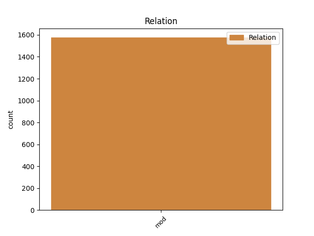
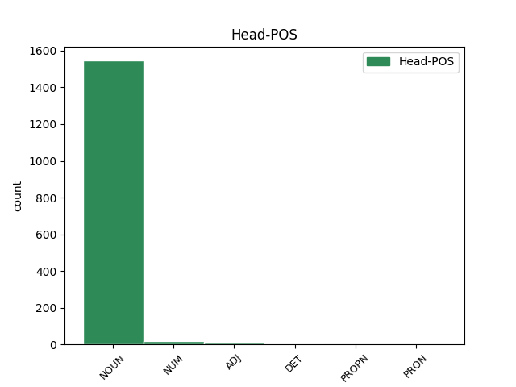
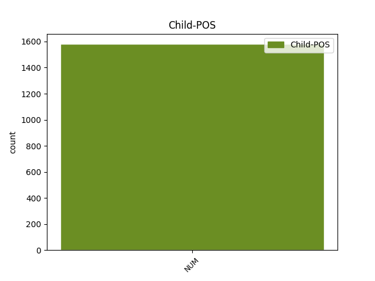

Distribution of features within this leaf



Agreement Rules sorted by frequency.
- When the dependent token is the modifer(mod) of the head token, and the head token is NOUN and the dependent token is NUM.
1 Naproti _ _ _ _ 0 _ _ _
2 tomu _ _ _ _ 0 _ _ _
3 prvky _ _ _ _ 0 _ _ _
4 , _ _ _ _ 0 _ _ _
5 kterým _ _ _ _ 0 _ _ _
6 chybí _ _ _ _ 0 _ _ _
7 jeden jeden NUM ClYS1---------- Case=Nom|Gender=Masc|Number=Sing|NumForm=Word|NumType=Card|NumValue=1,2,3 9 mod _ LNumValue=1
8 obvodový _ _ _ _ 0 _ _ _
9 elektron elektron NOUN NNIS1-----A---- Animacy=Inan|Case=Nom|Gender=Masc|Number=Sing|Polarity=Pos 0 _ _ _
10 do _ _ _ _ 0 _ _ _
11 úplného _ _ _ _ 0 _ _ _
12 obsazení _ _ _ _ 0 _ _ _
13 krajní _ _ _ _ 0 _ _ _
14 slupky _ _ _ _ 0 _ _ _
15 a _ _ _ _ 0 _ _ _
16 tvoří _ _ _ _ 0 _ _ _
17 jednomocné _ _ _ _ 0 _ _ _
18 záporné _ _ _ _ 0 _ _ _
19 ionty _ _ _ _ 0 _ _ _
20 a _ _ _ _ 0 _ _ _
21 vznikající _ _ _ _ 0 _ _ _
22 připoutáním _ _ _ _ 0 _ _ _
23 dalšího _ _ _ _ 0 _ _ _
24 elektronu _ _ _ _ 0 _ _ _
25 . _ _ _ _ 0 _ _ _
1 Musíme _ _ _ _ 0 _ _ _
2 - _ _ _ _ 0 _ _ _
3 li _ _ _ _ 0 _ _ _
4 hřebíky _ _ _ _ 0 _ _ _
5 přibíjet _ _ _ _ 0 _ _ _
6 poblíž _ _ _ _ 0 _ _ _
7 okraje _ _ _ _ 0 _ _ _
8 prkna _ _ _ _ 0 _ _ _
9 , _ _ _ _ 0 _ _ _
10 předvrtáváme _ _ _ _ 0 _ _ _
11 pro _ _ _ _ 0 _ _ _
12 ně _ _ _ _ 0 _ _ _
13 otvory _ _ _ _ 0 _ _ _
14 nejméně _ _ _ _ 0 _ _ _
15 do _ _ _ _ 0 _ _ _
16 dvou dva NUM ClXP2---------- Case=Gen|Number=Plur|NumForm=Word|NumType=Card|NumValue=1,2,3 17 mod _ LNumValue=2
17 třetin třetina NUM CyFP2---------- Case=Gen|Gender=Fem|Number=Plur|NumType=Frac 0 _ _ _
18 tloušťky _ _ _ _ 0 _ _ _
19 prkna _ _ _ _ 0 _ _ _
20 . _ _ _ _ 0 _ _ _
1 Při _ _ _ _ 0 _ _ _
2 směně _ _ _ _ 0 _ _ _
3 zpravidla _ _ _ _ 0 _ _ _
4 oba oba NUM ClYP1---------- Case=Nom|Gender=Masc|Number=Plur|NumForm=Word|NumType=Card|NumValue=1,2,3 5 mod _ LNumValue=2
5 směňující směňující ADJ AGMP1-----A---- Animacy=Anim|Aspect=Imp|Case=Nom|Gender=Masc|Number=Plur|Polarity=Pos|Tense=Pres|VerbForm=Part|Voice=Act 0 _ _ _
6 , _ _ _ _ 0 _ _ _
7 pokud _ _ _ _ 0 _ _ _
8 jde _ _ _ _ 0 _ _ _
9 o _ _ _ _ 0 _ _ _
10 užitnou _ _ _ _ 0 _ _ _
11 hodnotu _ _ _ _ 0 _ _ _
12 , _ _ _ _ 0 _ _ _
13 vydělají _ _ _ _ 0 _ _ _
14 , _ _ _ _ 0 _ _ _
15 zde _ _ _ _ 0 _ _ _
16 však _ _ _ _ 0 _ _ _
17 jde _ _ _ _ 0 _ _ _
18 o _ _ _ _ 0 _ _ _
19 jejich _ _ _ _ 0 _ _ _
20 subjektivní _ _ _ _ 0 _ _ _
21 ocenění _ _ _ _ 0 _ _ _
22 , _ _ _ _ 0 _ _ _
23 jež _ _ _ _ 0 _ _ _
24 nesmíme _ _ _ _ 0 _ _ _
25 zaměňovat _ _ _ _ 0 _ _ _
26 s _ _ _ _ 0 _ _ _
27 objektivním _ _ _ _ 0 _ _ _
28 jevem _ _ _ _ 0 _ _ _
29 směnné _ _ _ _ 0 _ _ _
30 hodnoty _ _ _ _ 0 _ _ _
31 . _ _ _ _ 0 _ _ _
1 Podle _ _ _ _ 0 _ _ _
2 slov _ _ _ _ 0 _ _ _
3 jednoho jeden NUM ClZS2---------- Case=Gen|Gender=Masc,Neut|Number=Sing|NumForm=Word|NumType=Card|NumValue=1,2,3 6 mod _ LNumValue=1
4 z _ _ _ _ 0 _ _ _
5 trenérů _ _ _ _ 0 _ _ _
6 Pšorny Pšorna PROPN NNMS2-----A---- Animacy=Anim|Case=Gen|Gender=Masc|NameType=Sur|Number=Sing|Polarity=Pos 0 _ _ _
7 vděčí _ _ _ _ 0 _ _ _
8 zápasníci _ _ _ _ 0 _ _ _
9 za _ _ _ _ 0 _ _ _
10 úspěch _ _ _ _ 0 _ _ _
11 jen _ _ _ _ 0 _ _ _
12 poctivé _ _ _ _ 0 _ _ _
13 dřině _ _ _ _ 0 _ _ _
14 a _ _ _ _ 0 _ _ _
15 stoprocentní _ _ _ _ 0 _ _ _
16 účasti _ _ _ _ 0 _ _ _
17 na _ _ _ _ 0 _ _ _
18 trénincích _ _ _ _ 0 _ _ _
19 . _ _ _ _ 0 _ _ _
1 Myšlenka _ _ _ _ 0 _ _ _
2 o _ _ _ _ 0 _ _ _
3 principiální _ _ _ _ 0 _ _ _
4 možnosti _ _ _ _ 0 _ _ _
5 vzniku _ _ _ _ 0 _ _ _
6 vysoce _ _ _ _ 0 _ _ _
7 organizovaných _ _ _ _ 0 _ _ _
8 a _ _ _ _ 0 _ _ _
9 myšlení _ _ _ _ 0 _ _ _
10 schopných _ _ _ _ 0 _ _ _
11 tvorů _ _ _ _ 0 _ _ _
12 , _ _ _ _ 0 _ _ _
13 a _ _ _ _ 0 _ _ _
14 to _ _ _ _ 0 _ _ _
15 dvojrozměrných _ _ _ _ 0 _ _ _
16 , _ _ _ _ 0 _ _ _
17 nikoli _ _ _ _ 0 _ _ _
18 trojrozměrných _ _ _ _ 0 _ _ _
19 , _ _ _ _ 0 _ _ _
20 jako _ _ _ _ 0 _ _ _
21 jsme _ _ _ _ 0 _ _ _
22 my já PRON PP-P1--1------- Case=Nom|Number=Plur|Person=1|PronType=Prs 0 _ _ _
23 dva dva NUM ClYP1---------- Case=Nom|Gender=Masc|Number=Plur|NumForm=Word|NumType=Card|NumValue=1,2,3 22 mod _ LNumValue=2|SpaceAfter=No
24 , _ _ _ _ 0 _ _ _
25 byla _ _ _ _ 0 _ _ _
26 vyslovena _ _ _ _ 0 _ _ _
27 jako _ _ _ _ 0 _ _ _
28 paradox _ _ _ _ 0 _ _ _
29 . _ _ _ _ 0 _ _ _
1 Pak _ _ _ _ 0 _ _ _
2 přišli _ _ _ _ 0 _ _ _
3 ti ten DET PDMP1---------- Animacy=Anim|Case=Nom|Gender=Masc|Number=Plur|PronType=Dem 0 _ _ _
4 čtyři čtyři NUM ClXP1---------- Case=Nom|Number=Plur|NumForm=Word|NumType=Card|NumValue=1,2,3 3 mod _ LNumValue=4|SpaceAfter=No
5 , _ _ _ _ 0 _ _ _
6 docela _ _ _ _ 0 _ _ _
7 samozřejmě _ _ _ _ 0 _ _ _
8 nasedli _ _ _ _ 0 _ _ _
9 do _ _ _ _ 0 _ _ _
10 dvou _ _ _ _ 0 _ _ _
11 tanků _ _ _ _ 0 _ _ _
12 , _ _ _ _ 0 _ _ _
13 jak _ _ _ _ 0 _ _ _
14 viděl _ _ _ _ 0 _ _ _
15 Vaňo _ _ _ _ 0 _ _ _
16 z _ _ _ _ 0 _ _ _
17 dálky _ _ _ _ 0 _ _ _
18 . _ _ _ _ 0 _ _ _
Disagree Examples:
1 Uvážili _ _ _ _ 0 _ _ _
2 jsme _ _ _ _ 0 _ _ _
3 důvody _ _ _ _ 0 _ _ _
4 Vašeho _ _ _ _ 0 _ _ _
5 požadavku _ _ _ _ 0 _ _ _
6 na _ _ _ _ 0 _ _ _
7 snížení _ _ _ _ 0 _ _ _
8 ceny cena NOUN NNFS2-----A---- Case=Gen|Gender=Fem|Number=Sing|Polarity=Pos 0 _ _ _
9 nabídnutých _ _ _ _ 0 _ _ _
10 Vám _ _ _ _ 0 _ _ _
11 zbytků _ _ _ _ 0 _ _ _
12 trikotýnu _ _ _ _ 0 _ _ _
13 a _ _ _ _ 0 _ _ _
14 umělého _ _ _ _ 0 _ _ _
15 * _ _ _ _ 0 _ _ _
16 * _ _ _ _ 0 _ _ _
17 třicet třicet NUM Cn-S4---------- Case=Acc|Number=Sing|NumForm=Word|NumType=Card 8 mod _ LNumValue=30
18 * _ _ _ _ 0 _ _ _
19 . _ _ _ _ 0 _ _ _
1 Vždyť _ _ _ _ 0 _ _ _
2 klapot _ _ _ _ 0 _ _ _
3 dnešních _ _ _ _ 0 _ _ _
4 střevíčků _ _ _ _ 0 _ _ _
5 dokázal _ _ _ _ 0 _ _ _
6 teprve _ _ _ _ 0 _ _ _
7 první _ _ _ _ 0 _ _ _
8 krok _ _ _ _ 0 _ _ _
9 za _ _ _ _ 0 _ _ _
10 práh _ _ _ _ 0 _ _ _
11 dětských _ _ _ _ 0 _ _ _
12 her _ _ _ _ 0 _ _ _
13 a _ _ _ _ 0 _ _ _
14 ten _ _ _ _ 0 _ _ _
15 má _ _ _ _ 0 _ _ _
16 přesnou _ _ _ _ 0 _ _ _
17 délku délka NOUN NNFS4-----A---- Case=Acc|Gender=Fem|Number=Sing|Polarity=Pos 0 _ _ _
18 , _ _ _ _ 0 _ _ _
19 ani _ _ _ _ 0 _ _ _
20 milimetru _ _ _ _ 0 _ _ _
21 rozdílu _ _ _ _ 0 _ _ _
22 , _ _ _ _ 0 _ _ _
23 prostě _ _ _ _ 0 _ _ _
24 přesně _ _ _ _ 0 _ _ _
25 sedmnáct sedmnáct NUM Cn-S1---------- Case=Nom|Number=Sing|NumForm=Word|NumType=Card 17 mod _ LNumValue=17|SpaceAfter=No
26 . _ _ _ _ 0 _ _ _
1 Loni _ _ _ _ 0 _ _ _
2 , _ _ _ _ 0 _ _ _
3 v _ _ _ _ 0 _ _ _
4 prvním _ _ _ _ 0 _ _ _
5 roce _ _ _ _ 0 _ _ _
6 # _ _ _ _ 0 _ _ _
7 pětiletky _ _ _ _ 0 _ _ _
8 , _ _ _ _ 0 _ _ _
9 jsme _ _ _ _ 0 _ _ _
10 však _ _ _ _ 0 _ _ _
11 postavili _ _ _ _ 0 _ _ _
12 více _ _ _ _ 0 _ _ _
13 než _ _ _ _ 0 _ _ _
14 sto sto NOUN NNNS4-----A---- Case=Acc|Gender=Neut|Number=Sing|Polarity=Pos 0 _ _ _
15 tisíc tisíc NUM ClXS2---------- Case=Gen|Number=Sing|NumForm=Word|NumType=Card|NumValue=1,2,3 14 mod _ LId=tisíc-1|LNumValue=1000
16 bytů _ _ _ _ 0 _ _ _
17 . _ _ _ _ 0 _ _ _
1 A _ _ _ _ 0 _ _ _
2 pokud _ _ _ _ 0 _ _ _
3 prohlašujete _ _ _ _ 0 _ _ _
4 , _ _ _ _ 0 _ _ _
5 že _ _ _ _ 0 _ _ _
6 s _ _ _ _ 0 _ _ _
7 politikou _ _ _ _ 0 _ _ _
8 nemáte _ _ _ _ 0 _ _ _
9 nebo _ _ _ _ 0 _ _ _
10 nechcete _ _ _ _ 0 _ _ _
11 mít _ _ _ _ 0 _ _ _
12 nic _ _ _ _ 0 _ _ _
13 společného _ _ _ _ 0 _ _ _
14 , _ _ _ _ 0 _ _ _
15 že _ _ _ _ 0 _ _ _
16 se _ _ _ _ 0 _ _ _
17 politicky _ _ _ _ 0 _ _ _
18 neangažujete _ _ _ _ 0 _ _ _
19 nebo _ _ _ _ 0 _ _ _
20 angažovat _ _ _ _ 0 _ _ _
21 nechcete _ _ _ _ 0 _ _ _
22 , _ _ _ _ 0 _ _ _
23 nezapomeňte _ _ _ _ 0 _ _ _
24 přitom _ _ _ _ 0 _ _ _
25 , _ _ _ _ 0 _ _ _
26 že _ _ _ _ 0 _ _ _
27 již _ _ _ _ 0 _ _ _
28 před _ _ _ _ 0 _ _ _
29 více _ _ _ _ 0 _ _ _
30 než _ _ _ _ 0 _ _ _
31 padesáti padesát NUM Cn-P2---------- Case=Gen|Number=Plur|NumForm=Word|NumType=Card 32 mod _ LNumValue=50
32 lety rok NOUN NNNP7-----A---- Case=Ins|Gender=Neut|Number=Plur|Polarity=Pos 0 _ _ _
33 bylo _ _ _ _ 0 _ _ _
34 nad _ _ _ _ 0 _ _ _
35 vší _ _ _ _ 0 _ _ _
36 pochybnost _ _ _ _ 0 _ _ _
37 dokázáno _ _ _ _ 0 _ _ _
38 , _ _ _ _ 0 _ _ _
39 že _ _ _ _ 0 _ _ _
40 i _ _ _ _ 0 _ _ _
41 politická _ _ _ _ 0 _ _ _
42 pasivita _ _ _ _ 0 _ _ _
43 , _ _ _ _ 0 _ _ _
44 neúčast _ _ _ _ 0 _ _ _
45 v _ _ _ _ 0 _ _ _
46 politice _ _ _ _ 0 _ _ _
47 anebo _ _ _ _ 0 _ _ _
48 vědomé _ _ _ _ 0 _ _ _
49 rozhodnutí _ _ _ _ 0 _ _ _
50 vzdát _ _ _ _ 0 _ _ _
51 se _ _ _ _ 0 _ _ _
52 politiky _ _ _ _ 0 _ _ _
53 je _ _ _ _ 0 _ _ _
54 vlastně _ _ _ _ 0 _ _ _
55 také _ _ _ _ 0 _ _ _
56 politika _ _ _ _ 0 _ _ _
57 . _ _ _ _ 0 _ _ _
1 Naši _ _ _ _ 0 _ _ _
2 zde _ _ _ _ 0 _ _ _
3 pomáhali _ _ _ _ 0 _ _ _
4 při _ _ _ _ 0 _ _ _
5 budování budování NOUN NNNS6-----A---- Case=Loc|Gender=Neut|Number=Sing|Polarity=Pos 0 _ _ _
6 i _ _ _ _ 0 _ _ _
7 v _ _ _ _ 0 _ _ _
8 provozu _ _ _ _ 0 _ _ _
9 jednoho jeden NUM ClZS2---------- Case=Gen|Gender=Masc,Neut|Number=Sing|NumForm=Word|NumType=Card|NumValue=1,2,3 5 mod _ LNumValue=1
10 z _ _ _ _ 0 _ _ _
11 rekreačních _ _ _ _ 0 _ _ _
12 zařízení _ _ _ _ 0 _ _ _
13 , _ _ _ _ 0 _ _ _
14 pařížského _ _ _ _ 0 _ _ _
15 Domu _ _ _ _ 0 _ _ _
16 pro _ _ _ _ 0 _ _ _
17 všechny _ _ _ _ 0 _ _ _
18 . _ _ _ _ 0 _ _ _